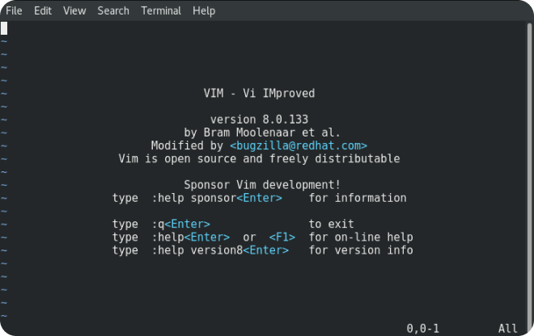

Текстовый редактор vim
Vim — это модификация текстового редактора Vi, созданного Биллом Джоем в 1976 году. Vim, в свою очередь, появился спустя 15 лет и стал одним из наиболее значимых приложений в истории компьютеров.
Главный экран редактора Vim
Vim использует довольно специфичную по нынешним временам модель управления, полностью построенную на идее модальности в угоду устаревшим клавиатурам, на которых не было стрелок и других уже привычных для нас клавиш.
99% поклонников Vim – это разработчики и гики
Несмотря на то, что нужды в Vim сейчас нет, он все еще популярен. Его поклонники образовали чуть ли не религиозный культ, строго верующий в Vim, защищающий его от противников и всячески продвигающий в обществе как лучшее, что могло быть изобретено для редактирования текста.